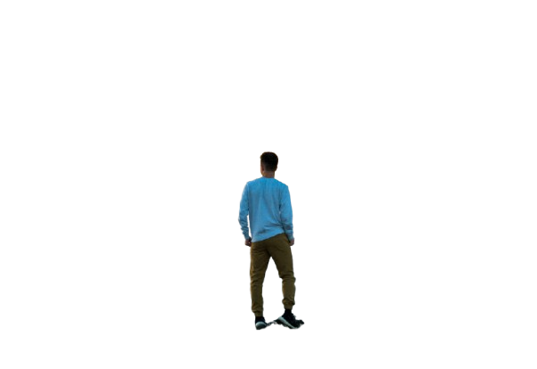
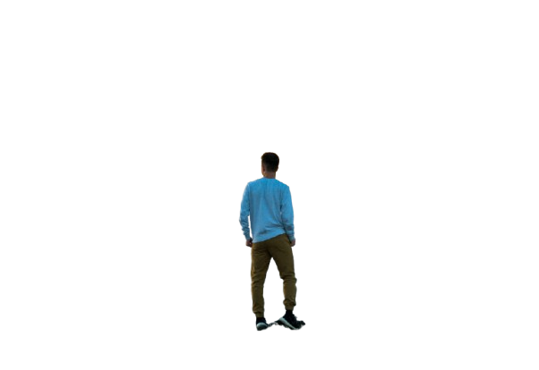

ADVENTURE
Adventure Time
An adventure is an exciting experience or undertaking that is typically bold, sometimes risky.[1] Adventures may be activities with danger such as traveling, exploring, skydiving, mountain climbing, scuba diving, river rafting, or other extreme sports. Adventures are often undertaken to create psychological arousal or in order to achieve a greater goal, such as the pursuit of knowledge that can only be obtained by such activitiesAn adventure is an exciting experience or undertaking that is typically bold, sometimes risky.[1] Adventures may be activities with danger such as traveling, exploring, skydiving, mountain climbing, scuba diving, river rafting, or other extreme sports. Adventures are often undertaken to create psychological arousal or in order to achieve a greater goal, such as the pursuit of knowledge that can only be obtained by such activities An adventure is an exciting experience or undertaking that is typically bold, sometimes risky.
Adventures may be activities with danger such as traveling, exploring, skydiving, mountain climbing, scuba diving, river rafting, or other extreme sports. Adventures are often undertaken to create psychological arousal or in order to achieve a greater goal, such as the pursuit of knowledge that can only be obtained by such activities
Biking
Mountain biking (abbr. MTB) is a sport of riding bicycles off-road, often over rough terrain, usually using specially designed mountain bikes. Mountain bikes share similarities with other bikes but incorporate features designed to enhance durability and performance in rough terrain, such as air or coil-sprung shocks used as suspension, larger and wider wheels and tires, stronger frame materials, and mechanically or hydraulically actuated disc brakes. Mountain biking can generally be broken down into distinct categories: cross country, trail, all mountain, enduro, downhill and freeride.
The sport requires endurance, core and back strength, balance, bike handling skills, and self-reliance. Advanced riders pursue both steep technical descents and high-incline climbs. In the case of freeride, downhill, and dirt jumping, aerial maneuvers are performed off both natural features and specially constructed jumps and ramps
Para Gliding
Paragliding is the recreational and competitive adventure sport of flying paragliders: lightweight, free-flying, foot-launched glider aircraft with no rigid primary structure.[1] The pilot sits in a harness or in a cocoon-like 'pod' suspended below a fabric wing. Wing shape is maintained by the suspension lines, the pressure of air entering vents in the front of the wing, and the aerodynamic forces of the air flowing over the outside
Despite not using an engine, paraglider flights can last many hours and cover many hundreds of kilometres, though flights of one to five hours and covering some tens of kilometres are more the norm. By skillful exploitation of sources of lift, the pilot may gain height, often climbing to altitudes of a few thousand metres
surfing
Surfing is a surface water sport in which an individual, a surfer (or two in tandem surfing), uses a board to ride on the forward section, or face, of a moving wave of water, which usually carries the surfer towards the shore. Waves suitable for surfing are primarily found on ocean shores, but can also be found as standing waves in the open ocean, in lakes, in rivers in the form of a tidal bore, or wave pools
Surfing includes all forms of wave-riding using a board, regardless of the stance. There are several types of boards. The Moche of Peru would often surf on reed craft, while the native peoples of the Pacific surfed waves on alaia, paipo, and other such watercraft. Ancient cultures often surfed on their belly and knees, while modern-day surfing is most often stand-up surfing, in which a surfer rides a wave while standing on a surfboard